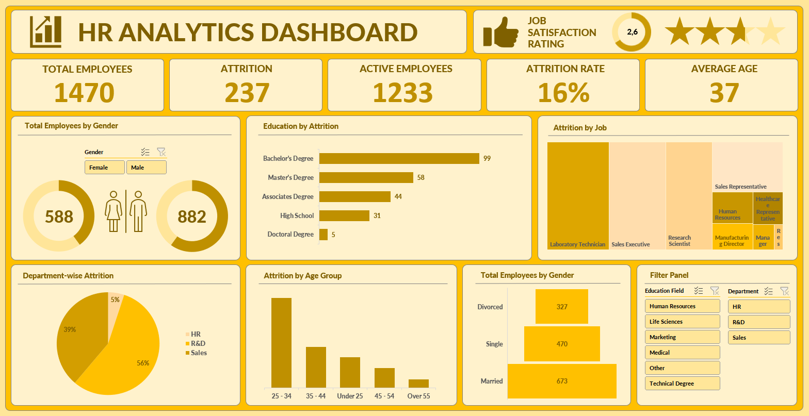
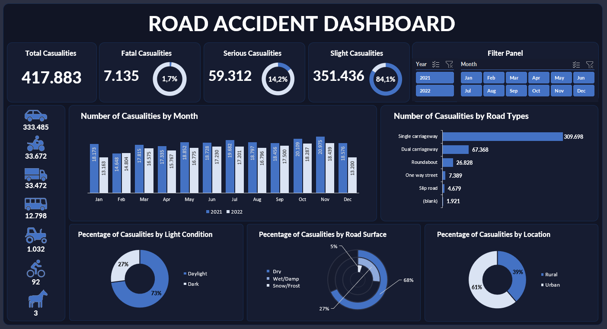
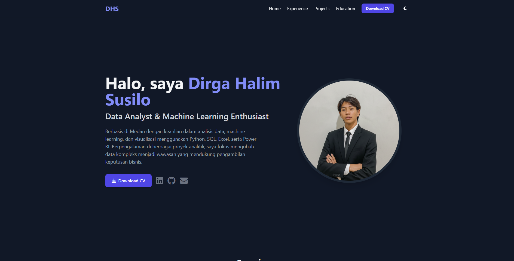

All My Projects
Berikut adalah kumpulan lengkap proyek yang pernah saya kerjakan, baik proyek akademis, profesional, maupun pribadi.



Portfolio Website
Website portofolio pribadi yang menampilkan proyek-proyek dan keterampilan saya dalam bidang data science.
CPNS Website
Platform persiapan CPNS terintegrasi yang menggabungkan bimbingan belajar offline dengan aplikasi seluler modern.